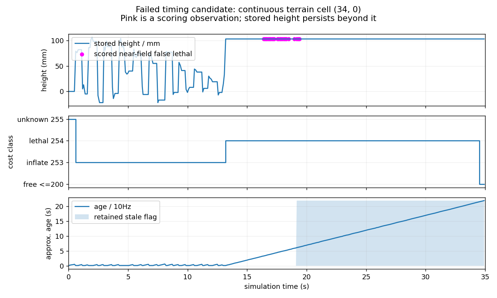

任务完成不等于假障碍已消除。时间补偿候选仍有假障碍、未完成本轮寻物，不接受为修复版。没有部署 RK、ACTIVE、Flash，也没有操作实车。旧六类对比录像保留作历史记录，不能继续用作实车缺陷修复的验收证据。
导航仍使用实板 locfix3 的 C 源码。旧宿主默认 APP_IMU_PROTO=0、直接喂物理真姿态；实板为 1，输入 BMI088 的 0x5B 重力向量和 0x5C 角速度。现已由 MuJoCo 加速度计/陀螺仪驱动板上同一融合整数计算，再输入真实协议和量化。240 组计算与实际 imu_fusion.v 一致；这是算术核对，不是完整平衡控制等价证明。
补回板上已有的 pc_edge_filter（50+d/16），并修正宿主 HAL 对平均模式的解码：RAM 存的是 Q3 均值/MAD，按实板转换成毫米区间，不能当最低点/最高点直接读。实际板上 pc_edge_filter→pc_project→pc_transform→pc_filter→EMA→trav_v3，以这轮采集的径向深度和真实 C 变换核对 8 帧：35,238 条滤波输出和 131,072 个代价格一致。该核对从空图开始验证子序列，不覆盖整段 CPU 总线时序和全硬件系统；SLF匹配继续用行为参考，本轮没有重新核对SLF RTL。
从旧组织点云恢复该设备固定像素射线对应的内参，fx≈79.944214、fy≈82.731255，与厂家日志打印的 fx 一致。拟合 SDK 数值结果的残差不是雷达物理测量精度。相机继续用 11-03 标定外参及厂家彩色/注册深度内参；车体 27×33cm。传感器噪声、扰动力和未辨识的电机动态仍是声明的仿真假设。
实际 xt_frame_rx.v 在收到首个网络包时锁存时间，并不保证等于曝光时刻。旧 SDK 录制显示完整云消息年龄中位数约 74.9ms，但它包含 SDK/网络处理，不能直接当作 FPGA 延迟。以下 80ms 仅为敏感性假设。C 候选只将位姿历史查询提前 80ms，不改碰撞门限、近区保持或清除规则。历史不足仍丢弃该帧。
| 条件 | 任务结果（辅助） | 近区假致命峰值 | 曾观察为假的格 ID 数 | 近区假格·帧 | 最终指令碰撞拒绝事件 | 碰撞 |
|---|---|---|---|---|---|---|
| 实际内参，0 ms 延迟 | 33.62s 完成 | 0 | 0 | 0 | 1 | 0 |
| 实际内参，80 ms 延迟假设 | 27.01s 完成 | 1 | 1 | 18 | 0 | 0 |
| 同样 80 ms，时间补偿候选 | 35s 未完成 | 1 | 2 | 28 | 0 | 0 |
三轮均使用实际内参、同源 C、相同初始噪声种子、1.5N/0.8Hz 摇摆外力和实测零指令时间段；外力不是实车辨识值。闭环路径随反馈不同，不能把完成时间差归因于某个清除机制。三轮都没有复现原实测“最终足迹检查持续拒绝约17秒”；本轮尚不能判定实车唯一根因。
左：80ms 延迟假设、原 C；右：同延迟、时间补偿 C 候选（失败）。粉色圈为当帧几何评分判为假的近区致命格；青叉仅显示本帧附近新发生的拒绝，按连续地形格坐标换算，不保留旧窗口坐标。下方显示实际输入经 C 变换后的点云；没有用理想地面替换它。
实际 trav_v3 保留窗口中心±12格（约0.6m方形范围）的旧高度。年龄超过60帧可标 stale，但仍保持该区数据，以保护雷达盲区真实障碍；新鲜点重新命中才会重置旧证据。若错误点进入该区且后续看不到，没有正面证据就不能安全删掉。运动检查用致命代价拒绝，而不自动把 stale 当自由。这是已核对的代码机制，尚不是原实测现场的唯一原因。

例如候选格(34,0)在16.395s首次被评分为近区假障碍，首次非致命是34.512s；18.117s只是两个事件间隔，并非连续18秒都在近区被确认为假。其高度103mm仍保留、年龄继续增加，代价变化也不等于高度清除。格(35,-4)转未知是离开近区后超龄作废，不算主动清障。
下一步应使用被拒格及其原始帧追查来源，区分错误高点、负坑/邻格落差和真实障碍，再实现带新观测证据的过期数据更新及受阻后重新观测。不能靠任务绕开、放宽碰撞检查、直接清近区或把未知写成自由来宣告通过。当前可见性清除原型仍未通过，也没有落入板上 RTL。
完整指标/限制 · 内参来源与拟合 · 未通过的 C 时间候选补丁。原始帧、100Hz IMU、连续格历史和宿主构建保存在 D:\tools\motion_input_audit_20261103。